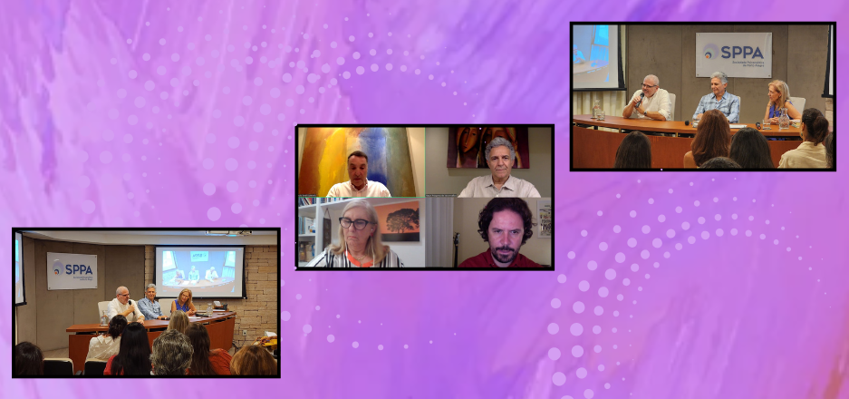

Em debate, a adolescência, a virtualidade e as transidentidades
- 
 LEGENDA
LEGENDA
No primeiro semestre de 2025, a Diretoria de Infância e Adolescência (DIA), com o objetivo de estimular cada vez mais a participação ativa de todos, promoveu atividades que versaram sobre temas contemporâneos e relevantes.
Em março, a atividade inaugural trouxe o tema Transidentidades na infância e adolescência, com o convidado Alexandre Saadeh, psiquiatra, psicodramatista e coordenador do Ambulatório Transdisciplinar de Identidade de Gênero e Orientação Sexual do Instituto de Psiquiatria do Hospital das Clínicas de São Paulo. Junto à Maria Elisabeth Cimenti, psicanalista de crianças, adolescentes e adultos, membro efetivo da SPPA, os dois conduziram uma conversa rica e sensível sobre tema tão atual e necessário.
No mês de abril, em parceria com a Diretoria de Ações na Comunidade, ocorreu a atividade Desconectar para vincular: o não uso do celular na escola. A conversa foi com André Pares, professor de filosofia, mestre em comunicação e mestrando em ensino de filosofia, e com Paulo Berél Sukiennik, membro associado da SPPA, analista de crianças, adolescentes e adultos. Juntos, ambos promoveram um instigante debate sobre essa pauta relevante, especialmente à luz da recente legislação que restringe o uso de celulares nas escolas.
Ainda em abril, motivada pela repercussão da série Adolescência, lançada pela plataforma de streaming Netflix, a DIA entendeu a importância de abrir um espaço de reflexão. Assim, realizou-se a atividade Vamos falar sobre Adolescência?, com a participação de Ruggero Levy, analista de crianças, adolescentes e adultos, e membro didata da SPPA. O encontro foi uma oportunidade para pensar não apenas sobre a série, mas a respeito das contribuições que a psicanálise pode oferecer frente às inquietações despertadas por ela.
Em maio, as ações se concentraram na preparação e divulgação do simpósio anual. A atividade Aproximações ao pensamento de Serge Tisseron, conduzida por Adriana Pacheco Pires e Denise Steibel, ambas da SPPA, apresentou as principais ideias do autor convidado para o XXVII Simpósio da Infância e Adolescência da SPPA. Serge Tisseron é psiquiatra, com pós-doutorado em Psicologia, membro da Academia de Paris, do Conselho Nacional Digital e codiretor do Departamento de Ciberpsicologia da Universidade de Paris.
Com o objetivo de alcançar um público mais amplo, além dos membros da nossa Sociedade, a Diretoria promoveu essas atividades mensais abertas à comunidade. Todas essas iniciativas estão disponíveis no canal da SPPA no YouTube. A única exceção é a atividade “Vamos falar sobre Adolescência?”, cujo acesso deve ser solicitado à secretaria da instituição. O link ficará disponível para visualização por 48 horas.
O semestre encerrou em junho com a realização do Simpósio, intitulado A virtualidade na infância e adolescência. Com uma programação consistente e voltada ao diálogo, foram abordados os impactos das tecnologias digitais e o modo com que crianças e adolescentes se relacionam com essas novas realidades, tratando ainda de como elas também transformam os adultos. Além disso, por meio de discussões clínicas, refletiu-se sobre como esses temas se expressam na prática nos consultórios e de que forma é possível abordá-los com profundidade e escuta.